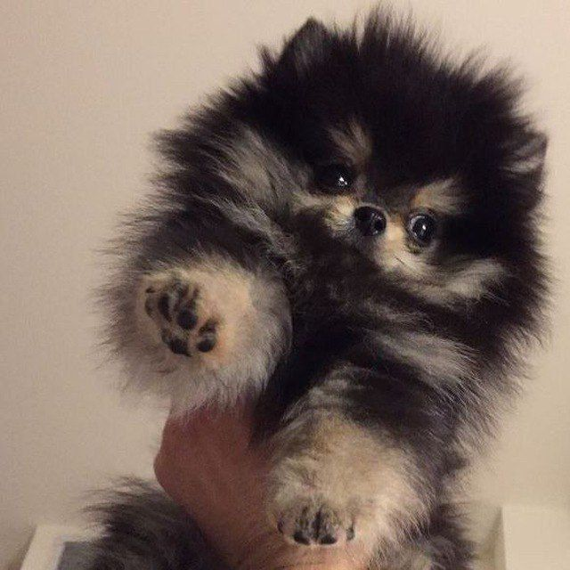
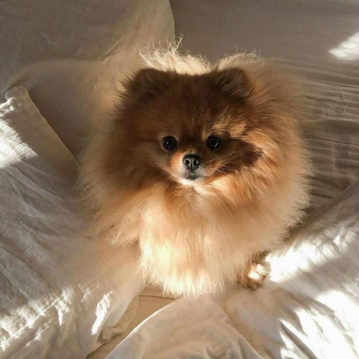
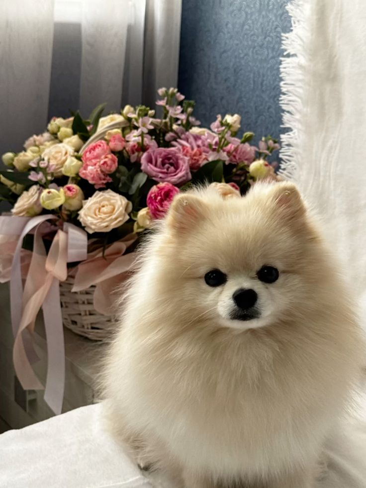

Кто такие шпицы?
Шпиц — одна из древнейших пород собак. Отличается густой пушистой шерстью, острой мордочкой и весёлым нравом. Шпицы бывают разных размеров: от миниатюрных померанцев до крупных вольфшпицев. Они очень умны, преданы хозяину и обожают ласку.
Померанский шпиц — самый популярный вид.
Их шерсть требует регулярного ухода,
но некоторые думают, что они линяют — на самом деле при правильном вычёсывании линька незаметна.
Наши шпицы



Характеристики шпицев
- Очень пушистый двойной шерстяной покров
- Не линяют, если регулярно вычёсывать
- Ласковые и игривые, любят детей
- Легко обучаются командам
- Отличные сторожа — звонкий лай
Песня для атмосферы
Забавное видео о померанцах
Сравнение видов шпицев
| Вид | Высота в холке | Вес | Окрас |
|---|---|---|---|
| Померанский шпиц | 18–22 см | 1,5–3,5 кг | Более 12 вариантов |
| Малый немецкий шпиц | 23–29 см | 8–11 кг | |
| Средний шпиц | 30–38 см, 11–15 кг | Разные | |
| Вольфшпиц (кеесхонд) | 43–55 см | 25–30 кг | Серый с подпалом |
Опрос: Ваша любимая порода шпица
Полезные ссылки
Мы любим шпицев ❤️ ♥ © ™ ® « » и всегда рады новым друзьям!